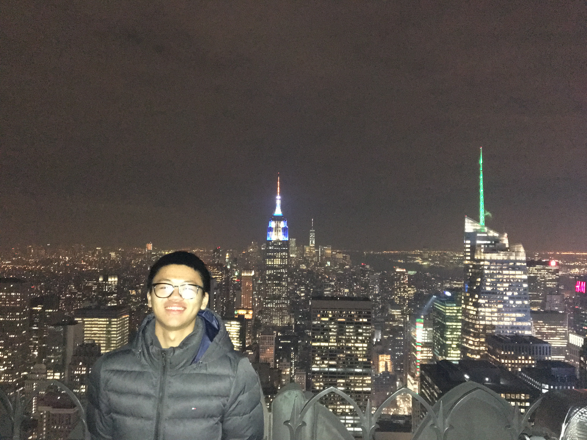
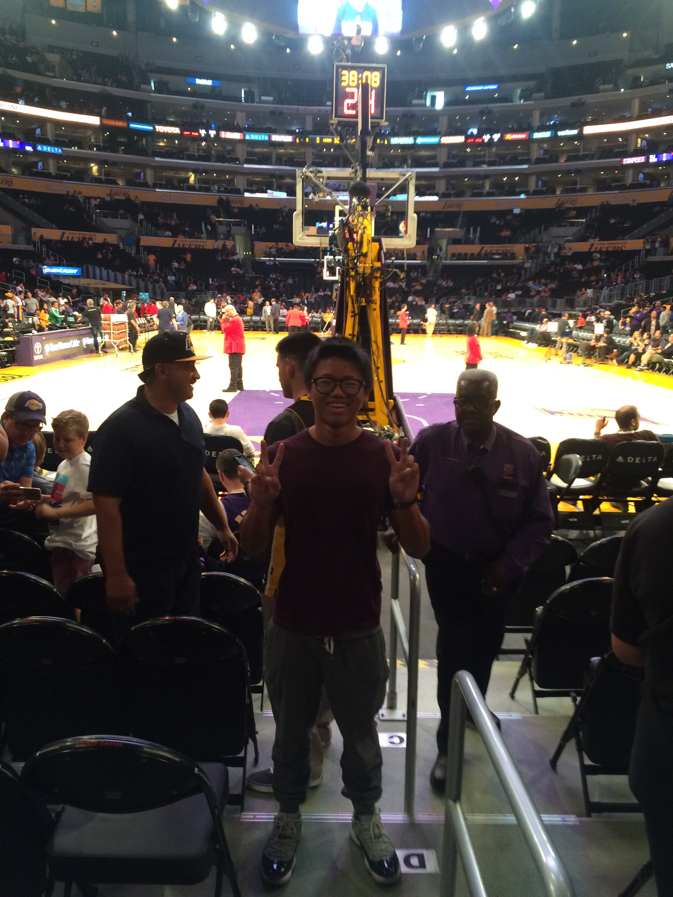

Rocky Balboa aka Sylvester Stallone
Hello this is Dominic Wong:) I am a UC Berkeley graduate majored in Economics and minored in Computer Sceience. I started coding in Fall 2017. Before that, I have never thought of learning computer or coding related things as I have never been exposed to this kind of knowledge. However, I took my first CS class in my life, CS61A (Structure and Interpretation of Computer Programs aka Python, SQL and Scheme?!) in Berkeley becuase of my friends' recommendation. I felt so hard to pick up at first due to the huge difference of conceptual thinking. However, I found out CS could be really interesting because you keep solving problems and making new stuff. I further self-learn web development by myself after chatting with another friend. I have been really into web developing because I can actually make my own website and design it in any way I want. Hope that your enjoy my webpages:)
Below are three photos I want to want to share with you :)
The first time I went to NYC. At Top of the Rock and the building with blue light was the Empire State Building.
My parents and I when I graduated from college. They were definitely more excited than I was lmao
My first and last time watching Kobe playing for the Lakers. The security guard was about to drive me away lol
